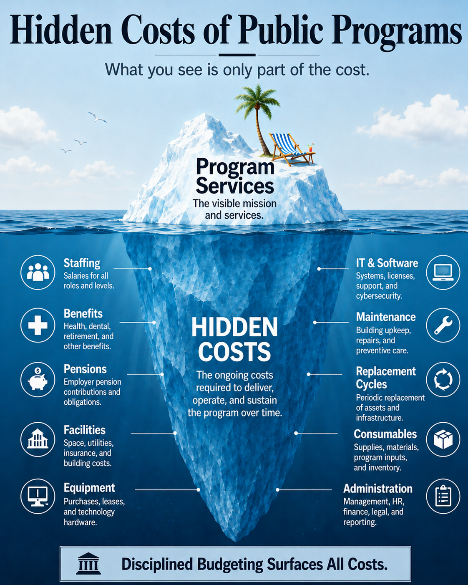

The Hidden Cost of Public Programs
Every program comes with two price tags: what it costs to start, and what it costs to own. Disciplined budgeting surfaces both.

Two Questions Every Program Budget Should Answer
A capital budget shows the first. The second is easier to miss.
What does it cost to start?
Capital appropriations, construction, design, setup, equipment purchases, and other one-time launch costs. This is the number that appears in budget headlines.
What does it cost to own?
Staffing, benefits, pensions, facilities, utilities, IT, equipment, maintenance, replacement cycles, insurance, and administration — year after year, long after the ribbon cutting.
Case Study: The African American Holistic Resource Center
The AAHRC has been under development for roughly seven years and is approximately one year from completion. It is used here not to argue for or against the project, but to show how hard it can be for residents to see the full cost of a public program — even one that is nearly finished.
- ✓ Original capital scope and budget
- ✓ Current capital scope and budget
- ✓ The capital budget increased substantially when the project expanded from rehabilitating an existing structure to a 6,000 square foot new construction
- ✓ A 2019 feasibility study estimated annual operating costs at approximately $1.5M–$2.0M and identified major operating cost categories
- ✓ Funding was redirected from other projects to close the capital funding gap
- ✗ Current planned operating budget
- ✗ Current planned staffing model
- ✗ Projected benefits and pension obligations for center staff
- ✗ Projected facility lifecycle and maintenance costs
- ✗ Long-term General Fund operating commitment
Every Major Program Should Have an Ownership Statement
Before Berkeley starts, expands, or continues a significant program, residents should be able to see both price tags. An Ownership Statement makes the second price tag visible.
Every program comes with two price tags. Disciplined budgeting surfaces both before promises are made — not after obligations are locked in.
Read the Full Framework →